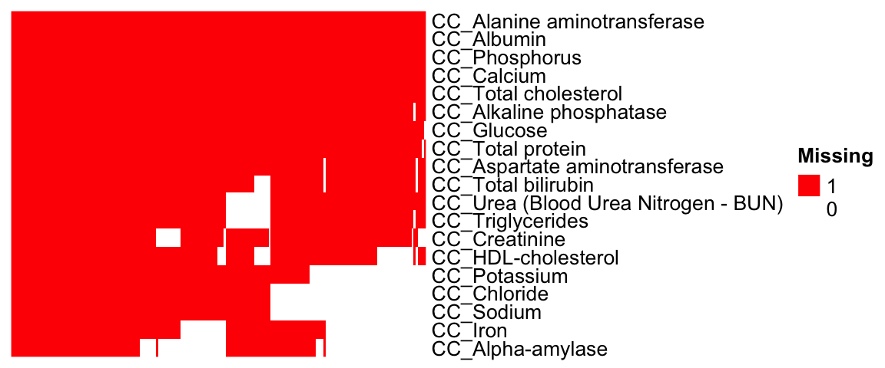
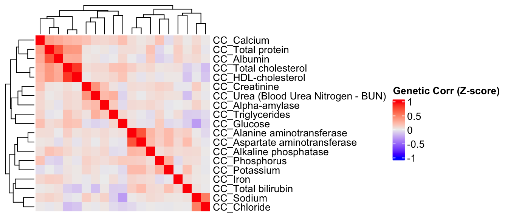

Last updated: 2023-07-03
Checks: 7 0
Knit directory: komputeExamples/
This reproducible R Markdown analysis was created with workflowr (version 1.7.0.1). The Checks tab describes the reproducibility checks that were applied when the results were created. The Past versions tab lists the development history.
Great! Since the R Markdown file has been committed to the Git repository, you know the exact version of the code that produced these results.
Great job! The global environment was empty. Objects defined in the global environment can affect the analysis in your R Markdown file in unknown ways. For reproduciblity it’s best to always run the code in an empty environment.
The command set.seed(20230110) was run prior to running
the code in the R Markdown file. Setting a seed ensures that any results
that rely on randomness, e.g. subsampling or permutations, are
reproducible.
Great job! Recording the operating system, R version, and package versions is critical for reproducibility.
Nice! There were no cached chunks for this analysis, so you can be confident that you successfully produced the results during this run.
Great job! Using relative paths to the files within your workflowr project makes it easier to run your code on other machines.
Great! You are using Git for version control. Tracking code development and connecting the code version to the results is critical for reproducibility.
The results in this page were generated with repository version dbdfbca. See the Past versions tab to see a history of the changes made to the R Markdown and HTML files.
Note that you need to be careful to ensure that all relevant files for
the analysis have been committed to Git prior to generating the results
(you can use wflow_publish or
wflow_git_commit). workflowr only checks the R Markdown
file, but you know if there are other scripts or data files that it
depends on. Below is the status of the Git repository when the results
were generated:
Ignored files:
Ignored: .DS_Store
Ignored: .Rhistory
Ignored: .Rproj.user/
Ignored: analysis/.DS_Store
Ignored: code/.DS_Store
Untracked files:
Untracked: data/CC.imp.res.v16.RData
Note that any generated files, e.g. HTML, png, CSS, etc., are not included in this status report because it is ok for generated content to have uncommitted changes.
These are the previous versions of the repository in which changes were
made to the R Markdown (analysis/kompute_test_CC_v16.Rmd)
and HTML (docs/kompute_test_CC_v16.html) files. If you’ve
configured a remote Git repository (see ?wflow_git_remote),
click on the hyperlinks in the table below to view the files as they
were in that past version.
| File | Version | Author | Date | Message |
|---|---|---|---|---|
| Rmd | dbdfbca | statsleelab | 2023-07-03 | svd mc added |
| html | 0ad952c | statsleelab | 2023-06-23 | kompute function input format changed |
| Rmd | fbd0f5c | statsleelab | 2023-06-23 | kompute input format changed |
| html | dcb3b0d | statsleelab | 2023-06-21 | pheno.cor added |
| Rmd | e7a365f | statsleelab | 2023-06-21 | pheno.cor added |
| html | 9b680ec | statsleelab | 2023-06-20 | doc updated |
| Rmd | d343f6a | statsleelab | 2023-06-20 | doc updated |
| html | d56cc7a | statsleelab | 2023-06-19 | Build site. |
| html | f4e1ab9 | statsleelab | 2023-01-10 | v16 update |
| Rmd | 7685a09 | statsleelab | 2023-01-10 | first commit |
| html | 7685a09 | statsleelab | 2023-01-10 | first commit |
rm(list=ls())
knitr::opts_chunk$set(message = FALSE, warning = FALSE)
library(data.table)
library(dplyr)
library(reshape2)
library(ggplot2)
library(tidyr) #spread
library(RColorBrewer)
library(circlize)
library(ComplexHeatmap)CC.data <- readRDS("data/CC.data.rds")
#dim(CC.data)The heatmap below presents a visualization of the phenotypic measurements taken for each control mouse. The columns represent individual mice, while the rows correspond to the distinct phenotypes measured.
mtest <- table(CC.data$proc_param_name_stable_id, CC.data$biological_sample_id)
mtest <-as.data.frame.matrix(mtest)
#dim(mtest)
if(FALSE){
nmax <-max(mtest)
library(circlize)
col_fun = colorRamp2(c(0, nmax), c("white", "red"))
col_fun(seq(0, nmax))
ht = Heatmap(as.matrix(mtest), cluster_rows = FALSE, cluster_columns = FALSE, show_column_names = F, col = col_fun,
row_names_gp = gpar(fontsize = 8), name="Count")
draw(ht)
}To maintain data quality and robustness, we will discard any phenotypes that have fewer than 20,000 recorded observations.
mtest <- table(CC.data$proc_param_name, CC.data$biological_sample_id)
#dim(mtest)
#head(mtest[,1:10])
mtest0 <- mtest>0
#head(mtest0[,1:10])
#rowSums(mtest0)
rmv.pheno.list <- rownames(mtest)[rowSums(mtest0)<20000]
#rmv.pheno.list
#dim(CC.data)
CC.data <- CC.data %>% filter(!(proc_param_name %in% rmv.pheno.list))
#dim(CC.data)
# number of phenotypes left
#length(unique(CC.data$proc_param_name))mtest <- table(CC.data$proc_param_name, CC.data$biological_sample_id)
#dim(mtest)
#head(mtest[,1:10])
mtest0 <- mtest>0
#head(mtest0[,1:10])
#summary(colSums(mtest0))
rmv.sample.list <- colnames(mtest)[colSums(mtest0)<15]
#length(rmv.sample.list)
#dim(CC.data)
CC.data <- CC.data %>% filter(!(biological_sample_id %in% rmv.sample.list))
#dim(CC.data)
# number of observations to use
#length(unique(CC.data$biological_sample_id))if(FALSE){
mtest <- table(CC.data$proc_param_name, CC.data$biological_sample_id)
dim(mtest)
mtest <-as.data.frame.matrix(mtest)
nmax <-max(mtest)
library(circlize)
col_fun = colorRamp2(c(0, nmax), c("white", "red"))
col_fun(seq(0, nmax))
pdf("~/Google Drive Miami/Miami_IMPC/output/measured_phenotypes_controls_after_filtering_CC.pdf", width = 10, height = 3)
ht = Heatmap(as.matrix(mtest), cluster_rows = FALSE, cluster_columns = FALSE, show_column_names = F, col = col_fun,
row_names_gp = gpar(fontsize = 7), name="Count")
draw(ht)
dev.off()
}We restructure our data from a long format to a wide one for further processing and analysis.
CC.mat <- CC.data %>%
dplyr::select(biological_sample_id, proc_param_name, data_point, sex, phenotyping_center, strain_name) %>%
##consider weight or age in weeks
arrange(biological_sample_id) %>%
distinct(biological_sample_id, proc_param_name, .keep_all=TRUE) %>% ## remove duplicates, maybe mean() is better.
spread(proc_param_name, data_point) %>%
tibble::column_to_rownames(var="biological_sample_id")
head(CC.mat) sex phenotyping_center strain_name CC_Alanine aminotransferase
21 male MRC Harwell 129S8/SvEv-Gpi1<c>/NimrH 85.9
22 male MRC Harwell 129S8/SvEv-Gpi1<c>/NimrH 110.9
24 male MRC Harwell 129S8/SvEv-Gpi1<c>/NimrH 32.1
25 male MRC Harwell 129S8/SvEv-Gpi1<c>/NimrH 33.7
26 male MRC Harwell 129S8/SvEv-Gpi1<c>/NimrH 37.2
27 male MRC Harwell 129S8/SvEv-Gpi1<c>/NimrH 39.7
CC_Albumin CC_Alkaline phosphatase CC_Alpha-amylase
21 25.3 90 759.2
22 26.9 86 844.3
24 26.5 103 822.9
25 26.2 81 799.9
26 28.4 95 810.5
27 27.3 93 821.4
CC_Aspartate aminotransferase CC_Calcium CC_Chloride CC_Creatinine
21 97.7 2.33 112 NA
22 114.7 2.41 113 NA
24 57.7 2.35 108 NA
25 64.0 2.35 110 NA
26 62.3 2.35 109 NA
27 58.3 2.37 109 NA
CC_Glucose CC_HDL-cholesterol CC_Iron CC_Phosphorus CC_Potassium CC_Sodium
21 8.46 NA 37.86 1.76 4.8 152
22 9.83 NA 39.78 1.82 5.7 153
24 8.36 NA 38.24 1.89 4.7 154
25 10.42 NA 36.28 2.10 4.8 153
26 9.79 NA 36.26 2.02 5.1 153
27 9.74 NA 38.30 1.57 4.5 153
CC_Total bilirubin CC_Total cholesterol CC_Total protein CC_Triglycerides
21 NA 3.27 50.6 1.04
22 NA 3.40 52.4 1.02
24 NA 3.63 52.4 1.43
25 NA 3.40 51.6 0.72
26 NA 3.53 51.9 1.15
27 NA 3.20 51.8 1.12
CC_Urea (Blood Urea Nitrogen - BUN)
21 NA
22 NA
24 NA
25 NA
26 NA
27 NA#dim(CC.mat)
#summary(colSums(is.na(CC.mat[,-1:-3])))ggplot(melt(CC.mat), aes(x=value)) +
geom_histogram() +
facet_wrap(~variable, scales="free", ncol=5)+
theme(strip.text.x = element_text(size = 6))
| Version | Author | Date |
|---|---|---|
| 7685a09 | statsleelab | 2023-01-10 |
In this step, we conduct a rank Z transformation on the phenotype data to ensure that the data is normally distributed
library(RNOmni)
CC.mat.rank <- CC.mat
#dim(CC.mat.rank)
CC.mat.rank <- CC.mat.rank[complete.cases(CC.mat.rank),]
#dim(CC.mat.rank)
#dim(CC.mat)
CC.mat <- CC.mat[complete.cases(CC.mat),]
#dim(CC.mat)
CC.mat.rank <- cbind(CC.mat.rank[,1:3], apply(CC.mat.rank[,-1:-3], 2, RankNorm))
ggplot(melt(CC.mat.rank), aes(x=value)) +
geom_histogram() +
facet_wrap(~variable, scales="free", ncol=5)+
theme(strip.text.x = element_text(size = 6))
| Version | Author | Date |
|---|---|---|
| 7685a09 | statsleelab | 2023-01-10 |
In this step, we apply Principal Variance Component Analysis (PVCA) on the phenotype matrix data. PVCA is an approach that combines Principal Component Analysis (PCA) and Variance Component Analysis to quantify the proportion of total variance in the data attributed to each important covariate, in this case ‘sex’ and ‘phenotyping_center’.
First, we prepare our metadata which includes our chosen covariates. Any character variables in the metadata are then converted to factors. To avoid potential confounding, we check for associations between our covariates and drop ‘strain_name’ due to its strong association with ‘phenotyping_center’.
Next, we run PVCA on randomly chosen subsets of our phenotype data (for computational efficiency). Finally, we compute the average effect size across all random samples and visualize the results in a PVCA plot.
source("code/PVCA.R")
meta <- CC.mat.rank[,1:3] ## examining covariates sex, phenotyping_center, and strain_name
#head(meta)
#dim(meta)
#summary(meta) # variables are still characters
meta[sapply(meta, is.character)] <- lapply(meta[sapply(meta, is.character)], as.factor)
#summary(meta) # now all variables are converted to factors
chisq.test(meta[,1],meta[,2])
Pearson's Chi-squared test
data: meta[, 1] and meta[, 2]
X-squared = 0.032984, df = 2, p-value = 0.9836chisq.test(meta[,2],meta[,3])
Pearson's Chi-squared test
data: meta[, 2] and meta[, 3]
X-squared = 14688, df = 6, p-value < 2.2e-16meta<-meta[,-3] # phenotyping_center and strain_name strongly associated which could cause confounding in the PVCA analysis, so we drop 'strain_name'.
G <- t(CC.mat.rank[,-1:-3]) ## preparing the phenotype matrix data
set.seed(09302021)
# Perform PVCA for 10 random samples of size 1000 (more computationally efficient)
pvca.res <- matrix(nrow=10, ncol=3)
for (i in 1:10){
sample <- sample(1:ncol(G), 1000, replace=FALSE)
pvca.res[i,] <- PVCA(G[,sample], meta[sample,], threshold=0.6, inter=FALSE)
}
# Compute average effect size across the 10 random samples
pvca.means <- colMeans(pvca.res)
names(pvca.means) <- c(colnames(meta), "resid")
# Create PVCA plot
pvca.plot <- PlotPVCA(pvca.means, "PVCA of Phenotype Matrix Data")
pvca.plot
| Version | Author | Date |
|---|---|---|
| 7685a09 | statsleelab | 2023-01-10 |
png(file="docs/figure/figures.Rmd/pvca_CC_1_v16.png", width=600, height=350)
pvca.plot
dev.off()quartz_off_screen
2 We remove batch effects (the center effect) in the phenotype data set by using the ComBat method.
library(sva)
combat_komp = ComBat(dat=G, batch=meta$phenotyping_center, par.prior=TRUE, prior.plots=TRUE, mod=NULL)
| Version | Author | Date |
|---|---|---|
| 7685a09 | statsleelab | 2023-01-10 |
#combat_komp[1:5,1:5]
#G[1:5,1:5] # for comparison, combat_komp is same form and same dimensions as GAfter using ComBat to account for batch effects, we perform a PVCA on the residuals. We expect to observe a significantly reduced effect from the phenotyping centers.
set.seed(09302021)
# Perform PVCA for 10 samples (more computationally efficient)
pvca.res.nobatch <- matrix(nrow=10, ncol=3)
for (i in 1:10){
sample <- sample(1:ncol(combat_komp), 1000, replace=FALSE)
pvca.res.nobatch[i,] <- PVCA(combat_komp[,sample], meta[sample,], threshold=0.6, inter=FALSE)
}
# Compute average effect size across samples
pvca.means.nobatch <- colMeans(pvca.res.nobatch)
names(pvca.means.nobatch) <- c(colnames(meta), "resid")
# Generate PVCA plot
pvca.plot.nobatch <- PlotPVCA(pvca.means.nobatch, "PVCA of Phenotype Matrix Data with Reduced Batch Effect")
pvca.plot.nobatch
| Version | Author | Date |
|---|---|---|
| 7685a09 | statsleelab | 2023-01-10 |
png(file="docs/figure/figures.Rmd/pvca_CC_2_v16.png", width=600, height=350)
pvca.plot.nobatch
dev.off()quartz_off_screen
2 We compute the phenotype correlations using different methods and compare them.
CC.cor.rank <- cor(CC.mat.rank[,-1:-3], use="pairwise.complete.obs") # pearson correlation coefficient
CC.cor <- cor(CC.mat[,-1:-3], use="pairwise.complete.obs", method="spearman") # spearman
CC.cor.combat <- cor(t(combat_komp), use="pairwise.complete.obs")
pheno.list <- rownames(CC.cor)
ht1 = Heatmap(CC.cor, show_column_names = F, row_names_gp = gpar(fontsize = 9), name="Spearm. Corr.")
draw(ht1)
ht2 = Heatmap(CC.cor.rank, show_column_names = F, row_names_gp = gpar(fontsize = 9), name="Corr. RankZ")
draw(ht2)
ht3 = Heatmap(CC.cor.combat, show_column_names = F, row_names_gp = gpar(fontsize = 9), name="Corr. ComBat")
draw(ht3)
CC.stat <- readRDS("data/CC.stat.v16.rds")
#dim(CC.stat)
table(CC.stat$parameter_name, CC.stat$procedure_name)
CC
Alanine aminotransferase 6312
Albumin 6312
Alkaline phosphatase 6297
Alpha-amylase 3310
Aspartate aminotransferase 6220
Calcium 6306
Chloride 3852
Cholesterol ratio 2269
Creatine kinase 2744
Creatinine 5701
Free fatty acids 1595
Fructosamine 2301
Glucose 6276
Glycerol 1617
HDL-cholesterol 5148
Iron 4025
LDL-cholesterol 1871
Magnesium 1656
Phosphorus 6306
Potassium 4459
Sodium 3852
Thyroxine 1129
Total bilirubin 5841
Total cholesterol 6301
Total protein 6278
Triglycerides 5473
Urea (Blood Urea Nitrogen - BUN) 5523#length(unique(CC.stat$marker_symbol)) #3983
#length(unique(CC.stat$allele_symbol)) #4152
#length(unique(CC.stat$proc_param_name)) #27, number of phenotypes in association statistics data set
#length(unique(CC.data$proc_param_name)) #19, number of phenotypes in final control data
pheno.list.stat <- unique(CC.stat$proc_param_name)
pheno.list.ctrl <- unique(CC.data$proc_param_name)
#sum(pheno.list.stat %in% pheno.list.ctrl)
#sum(pheno.list.ctrl %in% pheno.list.stat)
# Identifying common phenotypes between statistics and control data
common.pheno.list <- sort(intersect(pheno.list.ctrl, pheno.list.stat))
common.pheno.list [1] "CC_Alanine aminotransferase" "CC_Albumin"
[3] "CC_Alkaline phosphatase" "CC_Alpha-amylase"
[5] "CC_Aspartate aminotransferase" "CC_Calcium"
[7] "CC_Chloride" "CC_Creatinine"
[9] "CC_Glucose" "CC_HDL-cholesterol"
[11] "CC_Iron" "CC_Phosphorus"
[13] "CC_Potassium" "CC_Sodium"
[15] "CC_Total bilirubin" "CC_Total cholesterol"
[17] "CC_Total protein" "CC_Triglycerides"
[19] "CC_Urea (Blood Urea Nitrogen - BUN)"#length(common.pheno.list)
# Filtering summary statistics to contain only common phenotypes
#dim(CC.stat)
CC.stat <- CC.stat %>% filter(proc_param_name %in% common.pheno.list)
#dim(CC.stat)
#length(unique(CC.stat$proc_param_name))mtest <- table(CC.stat$proc_param_name, CC.stat$marker_symbol)
mtest <-as.data.frame.matrix(mtest)
nmax <-max(mtest)
col_fun = colorRamp2(c(0, nmax), c("white", "red"))
#col_fun(seq(0, nmax))
ht = Heatmap(as.matrix(mtest), cluster_rows = FALSE, cluster_columns = FALSE, show_column_names = F, col = col_fun,
row_names_gp = gpar(fontsize = 8), name="Count")
draw(ht)
| Version | Author | Date |
|---|---|---|
| 7685a09 | statsleelab | 2023-01-10 |
## sum(z-score)/sqrt(# of zscore)
sumz <- function(z){ sum(z)/sqrt(length(z)) }
CC.z = CC.stat %>%
dplyr::select(marker_symbol, proc_param_name, z_score) %>%
na.omit() %>%
group_by(marker_symbol, proc_param_name) %>%
summarize(zscore = sumz(z_score)) ## combine z-scores
#dim(CC.z)# Function to convert NaN to NA
nan2na <- function(df){
out <- data.frame(sapply(df, function(x) ifelse(is.nan(x), NA, x)))
colnames(out) <- colnames(df)
out
}
# Converting the long format of z-scores to a wide format matrix
CC.zmat = dcast(CC.z, marker_symbol ~ proc_param_name, value.var = "zscore",
fun.aggregate = mean) %>% tibble::column_to_rownames(var="marker_symbol")
CC.zmat = nan2na(CC.zmat) #convert nan to na
#dim(CC.zmat)The heatmap illustrates tested (red) and untested (white) gene-phenotype pairs.
# Generate a matrix indicating where z-scores are present
id.mat <- 1*(!is.na(CC.zmat)) # multiply 1 to make this matrix numeric
#nrow(as.data.frame(colSums(id.mat)))
#dim(id.mat)
## heatmap of gene - phenotype (red: tested, white: untested)
ht = Heatmap(t(id.mat),
cluster_rows = T, clustering_distance_rows ="binary",
cluster_columns = T, clustering_distance_columns = "binary",
show_row_dend = F, show_column_dend = F, # do not show dendrogram
show_column_names = F, col = c("white","red"),
row_names_gp = gpar(fontsize = 10), name="Missing")
draw(ht)
The histogram presents the distribution of association Z-scores for each phenotype.
ggplot(melt(CC.zmat), aes(x=value)) +
geom_histogram() +
facet_wrap(~variable, scales="free", ncol=5)+
theme(strip.text.x = element_text(size = 6))
Here, we estimate the genetic correlations between phenotypes utilizing the association Z-score matrix.
# Select common phenotypes
CC.zmat <- CC.zmat[,common.pheno.list]
#dim(CC.zmat)
# Compute genetic correlations
CC.zcor = cor(CC.zmat, use="pairwise.complete.obs")
# Generate heatmap of the correlation matrix
ht = Heatmap(CC.zcor, cluster_rows = T, cluster_columns = T, show_column_names = F, #col = col_fun,
row_names_gp = gpar(fontsize = 10),
name="Genetic Corr (Z-score)"
)
draw(ht)
We will compare the correlation matrix obtained from control mice phenotype data and the genetic correlation matrix estimated using association Z-scores. As depicted below, both correlation heatmaps show similar correlation patterns.
CC.cor.rank.fig <- CC.cor.rank[common.pheno.list,common.pheno.list]
CC.cor.fig <- CC.cor[common.pheno.list,common.pheno.list]
CC.cor.combat.fig <- CC.cor.combat[common.pheno.list, common.pheno.list]
CC.zcor.fig <- CC.zcor
ht = Heatmap(CC.cor.rank.fig, cluster_rows = TRUE, cluster_columns = TRUE, show_column_names = F, #col = col_fun,
show_row_dend = F, show_column_dend = F, # do not show dendrogram
row_names_gp = gpar(fontsize = 8), column_title="Phenotype Corr (RankZ, Pearson)", column_title_gp = gpar(fontsize = 8),
name="Corr")
pheno.order <- row_order(ht)
#draw(ht)
CC.cor.rank.fig <- CC.cor.rank.fig[pheno.order,pheno.order]
ht1 = Heatmap(CC.cor.rank.fig, cluster_rows = FALSE, cluster_columns = FALSE, show_column_names = F, #col = col_fun,
show_row_dend = F, show_column_dend = F, # do not show dendrogram
row_names_gp = gpar(fontsize = 8), column_title="Phenotype Corr (RankZ, Pearson)", column_title_gp = gpar(fontsize = 8),
name="Corr")
CC.cor.fig <- CC.cor.fig[pheno.order,pheno.order]
ht2 = Heatmap(CC.cor.fig, cluster_rows = FALSE, cluster_columns = FALSE, show_column_names = F, #col = col_fun,
row_names_gp = gpar(fontsize = 8), column_title="Phenotype Corr (Spearman)", column_title_gp = gpar(fontsize = 8),
name="Corr")
CC.cor.combat.fig <- CC.cor.combat.fig[pheno.order,pheno.order]
ht3 = Heatmap(CC.cor.combat.fig, cluster_rows = FALSE, cluster_columns = FALSE, show_column_names = F, #col = col_fun,
row_names_gp = gpar(fontsize = 8), column_title="Phenotype Corr (Combat, Pearson)", column_title_gp = gpar(fontsize = 8),
name="Corr")
CC.zcor.fig <- CC.zcor.fig[pheno.order,pheno.order]
ht4 = Heatmap(CC.zcor.fig, cluster_rows = FALSE, cluster_columns = FALSE, show_column_names = F, #col = col_fun,
row_names_gp = gpar(fontsize = 8), column_title="Genetic Corr (Pearson)", column_title_gp = gpar(fontsize = 8),
name="Corr"
)
draw(ht1+ht2+ht3+ht4)
png(file="docs/figure/figures.Rmd/cors_CC.png", width=800, height=250)
draw(ht1+ht2+ht3+ht4)
dev.off()quartz_off_screen
2 To evaluate the correlation between different genetic correlation matrices, we apply Mantel’s test, which measures the correlation between two distance matrices.
####################
# Use Mantel test
# https://stats.idre.ucla.edu/r/faq/how-can-i-perform-a-mantel-test-in-r/
# install.packages("ade4")
library(ade4)
to.upper<-function(X) X[upper.tri(X,diag=FALSE)]
a1 <- to.upper(CC.cor.fig)
a2 <- to.upper(CC.cor.rank.fig)
a3 <- to.upper(CC.cor.combat.fig)
a4 <- to.upper(CC.zcor.fig)
plot(a4, a1)
| Version | Author | Date |
|---|---|---|
| 9b680ec | statsleelab | 2023-06-20 |
plot(a4, a2)
| Version | Author | Date |
|---|---|---|
| 9b680ec | statsleelab | 2023-06-20 |
plot(a4, a3)
| Version | Author | Date |
|---|---|---|
| 9b680ec | statsleelab | 2023-06-20 |
mantel.rtest(as.dist(1-CC.cor.fig), as.dist(1-CC.zcor.fig), nrepet = 9999) #nrepet = number of permutationsMonte-Carlo test
Call: mantelnoneuclid(m1 = m1, m2 = m2, nrepet = nrepet)
Observation: 0.4065029
Based on 9999 replicates
Simulated p-value: 1e-04
Alternative hypothesis: greater
Std.Obs Expectation Variance
5.3342338350 0.0006783314 0.0057880553 mantel.rtest(as.dist(1-CC.cor.rank.fig), as.dist(1-CC.zcor.fig), nrepet = 9999)Monte-Carlo test
Call: mantelnoneuclid(m1 = m1, m2 = m2, nrepet = nrepet)
Observation: 0.4418449
Based on 9999 replicates
Simulated p-value: 1e-04
Alternative hypothesis: greater
Std.Obs Expectation Variance
5.775580172 0.001222770 0.005820245 mantel.rtest(as.dist(1-CC.cor.combat.fig), as.dist(1-CC.zcor.fig), nrepet = 9999)Monte-Carlo test
Call: mantelnoneuclid(m1 = m1, m2 = m2, nrepet = nrepet)
Observation: 0.5885487
Based on 9999 replicates
Simulated p-value: 1e-04
Alternative hypothesis: greater
Std.Obs Expectation Variance
7.818172131 -0.001408542 0.005694173 # Check if KOMPUTE is installed, if not, install it from GitHub using devtools
if(!"kompute" %in% rownames(installed.packages())){
library(devtools)
devtools::install_github("dleelab/kompute")
}
library(kompute)In this section, we conduct a simulation study to compare the performance of the KOMPUTE method with the measured gene-phenotype association z-scores. We randomly select some of these measured z-scores, mask them, and then use the KOMPUTE method to impute them. We then compare the imputed z-scores with the measured ones.
zmat <-t(CC.zmat)
dim(zmat)[1] 19 5342# filter genes with less than 1 missing data point (na)
zmat0 <- is.na(zmat)
num.na<-colSums(zmat0)
#summary(num.na)
#dim(zmat)
#dim(zmat[,num.na<1])
#dim(zmat[,num.na<5])
#dim(zmat[,num.na<10])
# filter genes with less than 1 missing data point (na)
zmat <- zmat[,num.na<1]
#dim(zmat)
# Set correlation method for phenotypes
#pheno.cor <- CC.cor.fig
#pheno.cor <- CC.cor.rank.fig
pheno.cor <- CC.cor.combat.fig
#pheno.cor <- CC.zcor.fig
zmat <- zmat[rownames(pheno.cor),,drop=FALSE]
#rownames(zmat)
#rownames(pheno.cor)
#colnames(pheno.cor)
npheno <- nrow(zmat)
## calculate the percentage of missing Z-scores in the original data
100*sum(is.na(zmat))/(nrow(zmat)*ncol(zmat)) # 0%[1] 0nimp <- 1000 # # of missing/imputed Z-scores
set.seed(2222)
## find index of all measured zscores
all.i <- 1:(nrow(zmat)*ncol(zmat))
measured <- as.vector(!is.na(as.matrix(zmat)))
measured.i <- all.i[measured]
## mask 2000 measured z-scores
mask.i <- sort(sample(measured.i, nimp))
org.z = as.matrix(zmat)[mask.i]
zvec <- as.vector(as.matrix(zmat))
zvec[mask.i] <- NA
zmat.imp <- matrix(zvec, nrow=npheno)
rownames(zmat.imp) <- rownames(zmat)kompute.res <- kompute(t(zmat.imp), pheno.cor, 0.01)
# Compare measured vs imputed z-scores
length(org.z)[1] 1000imp.z <- as.matrix(t(kompute.res$zmat))[mask.i]
imp.info <- as.matrix(t(kompute.res$infomat))[mask.i]
# Create a dataframe with the original and imputed z-scores and the information of imputed z-scores
imp <- data.frame(org.z=org.z, imp.z=imp.z, info=imp.info)
#dim(imp)
imp <- imp[complete.cases(imp),]
imp <- subset(imp, info>=0 & info <= 1)
#dim(imp)
cor.val <- round(cor(imp$imp.z, imp$org.z), digits=3)
#cor.val
g <- ggplot(imp, aes(x=imp.z, y=org.z)) +
geom_point() +
labs(title=paste0("IMPC CC Data, Cor=",cor.val),
x="Imputed Z-scores", y = "Measured Z-scores") +
theme_minimal()
g
# Set a cutoff for information content and filter the data accordingly
info.cutoff <- 0.8
imp.sub <- subset(imp, info>info.cutoff)
#dim(imp.sub)
#summary(imp.sub$imp.z)
#summary(imp.sub$info)
cor.val <- round(cor(imp.sub$imp.z, imp.sub$org.z), digits=3)
#cor.val
g <- ggplot(imp.sub, aes(x=imp.z, y=org.z, col=info)) +
geom_point() +
labs(title=paste0("IMPC Behavior Data (CC), Info>", info.cutoff, ", Cor=",cor.val),
x="Imputed Z-scores", y = "Measured Z-scores", col="Info") +
theme_minimal()
g
# save plot
png(file="docs/figure/figures.Rmd/sim_results_CC_v16.png", width=600, height=350)
g
dev.off()quartz_off_screen
2 # Part 2 of Figure 2
fig2.2 <- ggplot(imp.sub, aes(x=imp.z, y=org.z, col=info)) +
geom_point() +
labs(title="Clinical Chemistry",
x="Imputed Z-scores", y = "", col="Info") +
scale_x_continuous(limits=c(-9,9), breaks=c(seq(-9,9,3)), minor_breaks = NULL) +
scale_y_continuous(limits=c(-9,9), breaks=c(seq(-9,9,3))) +
scale_color_gradient(limits=c(0.8,1), low="#98cdf9", high="#084b82") +
theme_bw() +
theme(legend.position="none", plot.title=element_text(hjust=0.5))
save(fig2.2, file="docs/figure/figures.Rmd/sim_CC_v16.rdata")# load SVD Matrix Completion function
source("code/svd_impute.R")
r <- 6
mc.res <- svd.impute(zmat.imp, r)
# Compare measured vs imputed z-scores
length(org.z)[1] 1000imp.z <- mc.res[mask.i]
#plot(imp.z, org.z)
#cor(imp.z, org.z)
# Create a dataframe with the original and imputed z-scores and the information of imputed z-scores
imp2 <- data.frame(org.z=org.z, imp.z=imp.z)
#dim(imp2)
imp2 <- imp2[complete.cases(imp2),]
cor.val <- round(cor(imp2$imp.z, imp2$org.z), digits=3)
#cor.val
g <- ggplot(imp2, aes(x=imp.z, y=org.z)) +
geom_point() +
labs(title=paste0("IMPC CC Data, Cor=",cor.val),
x="Imputed Z-scores", y = "Measured Z-scores") +
theme_minimal()
gimp$method <- "Kompute"
imp2$method <- "SVD-MC"
imp2$info <- NA
CC_Imputation_Result <- rbind(imp, imp2)
save(CC_Imputation_Result, file = "data/CC.imp.res.v16.RData")plist <- sort(colnames(CC.zmat))
CC_Zscore_Mat <- as.matrix(CC.zmat[,plist])
save(CC_Zscore_Mat, file = "data/CC.zmat.v16.RData")
CC_Pheno_Cor <- pheno.cor[plist,plist]
save(CC_Pheno_Cor, file = "data/CC.pheno.cor.v16.RData")
sessionInfo()R version 4.2.1 (2022-06-23)
Platform: x86_64-apple-darwin17.0 (64-bit)
Running under: macOS Catalina 10.15.7
Matrix products: default
BLAS: /Library/Frameworks/R.framework/Versions/4.2/Resources/lib/libRblas.0.dylib
LAPACK: /Library/Frameworks/R.framework/Versions/4.2/Resources/lib/libRlapack.dylib
locale:
[1] en_US.UTF-8/en_US.UTF-8/en_US.UTF-8/C/en_US.UTF-8/en_US.UTF-8
attached base packages:
[1] grid stats graphics grDevices utils datasets methods
[8] base
other attached packages:
[1] kompute_0.1.0 ade4_1.7-20 sva_3.44.0
[4] BiocParallel_1.30.3 genefilter_1.78.0 mgcv_1.8-40
[7] nlme_3.1-158 lme4_1.1-31 Matrix_1.5-1
[10] RNOmni_1.0.1 ComplexHeatmap_2.12.1 circlize_0.4.15
[13] RColorBrewer_1.1-3 tidyr_1.2.0 ggplot2_3.4.1
[16] reshape2_1.4.4 dplyr_1.0.9 data.table_1.14.2
[19] workflowr_1.7.0.1
loaded via a namespace (and not attached):
[1] minqa_1.2.5 colorspace_2.1-0 rjson_0.2.21
[4] rprojroot_2.0.3 XVector_0.36.0 GlobalOptions_0.1.2
[7] fs_1.5.2 clue_0.3-62 rstudioapi_0.13
[10] farver_2.1.1 bit64_4.0.5 AnnotationDbi_1.58.0
[13] fansi_1.0.4 codetools_0.2-18 splines_4.2.1
[16] doParallel_1.0.17 cachem_1.0.6 knitr_1.39
[19] jsonlite_1.8.0 nloptr_2.0.3 annotate_1.74.0
[22] cluster_2.1.3 png_0.1-8 compiler_4.2.1
[25] httr_1.4.3 assertthat_0.2.1 fastmap_1.1.0
[28] limma_3.52.4 cli_3.6.0 later_1.3.0
[31] htmltools_0.5.3 tools_4.2.1 gtable_0.3.1
[34] glue_1.6.2 GenomeInfoDbData_1.2.8 Rcpp_1.0.10
[37] Biobase_2.56.0 jquerylib_0.1.4 vctrs_0.5.2
[40] Biostrings_2.64.0 iterators_1.0.14 xfun_0.31
[43] stringr_1.4.0 ps_1.7.1 lifecycle_1.0.3
[46] XML_3.99-0.10 edgeR_3.38.4 getPass_0.2-2
[49] MASS_7.3-58.1 zlibbioc_1.42.0 scales_1.2.1
[52] promises_1.2.0.1 parallel_4.2.1 yaml_2.3.5
[55] memoise_2.0.1 sass_0.4.2 stringi_1.7.8
[58] RSQLite_2.2.15 highr_0.9 S4Vectors_0.34.0
[61] foreach_1.5.2 BiocGenerics_0.42.0 boot_1.3-28
[64] shape_1.4.6 GenomeInfoDb_1.32.3 rlang_1.0.6
[67] pkgconfig_2.0.3 matrixStats_0.62.0 bitops_1.0-7
[70] evaluate_0.16 lattice_0.20-45 purrr_0.3.4
[73] labeling_0.4.2 bit_4.0.4 processx_3.7.0
[76] tidyselect_1.2.0 plyr_1.8.7 magrittr_2.0.3
[79] R6_2.5.1 IRanges_2.30.0 generics_0.1.3
[82] DBI_1.1.3 pillar_1.8.1 whisker_0.4
[85] withr_2.5.0 survival_3.3-1 KEGGREST_1.36.3
[88] RCurl_1.98-1.8 tibble_3.1.8 crayon_1.5.1
[91] utf8_1.2.3 rmarkdown_2.14 GetoptLong_1.0.5
[94] locfit_1.5-9.6 blob_1.2.3 callr_3.7.1
[97] git2r_0.30.1 digest_0.6.29 xtable_1.8-4
[100] httpuv_1.6.5 stats4_4.2.1 munsell_0.5.0
[103] bslib_0.4.0